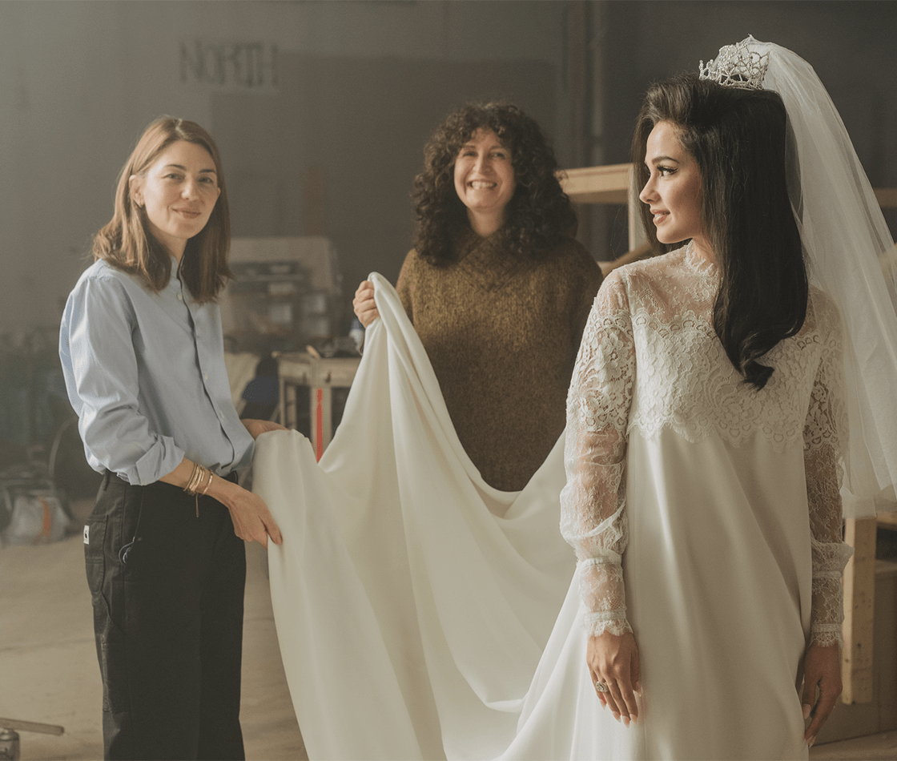
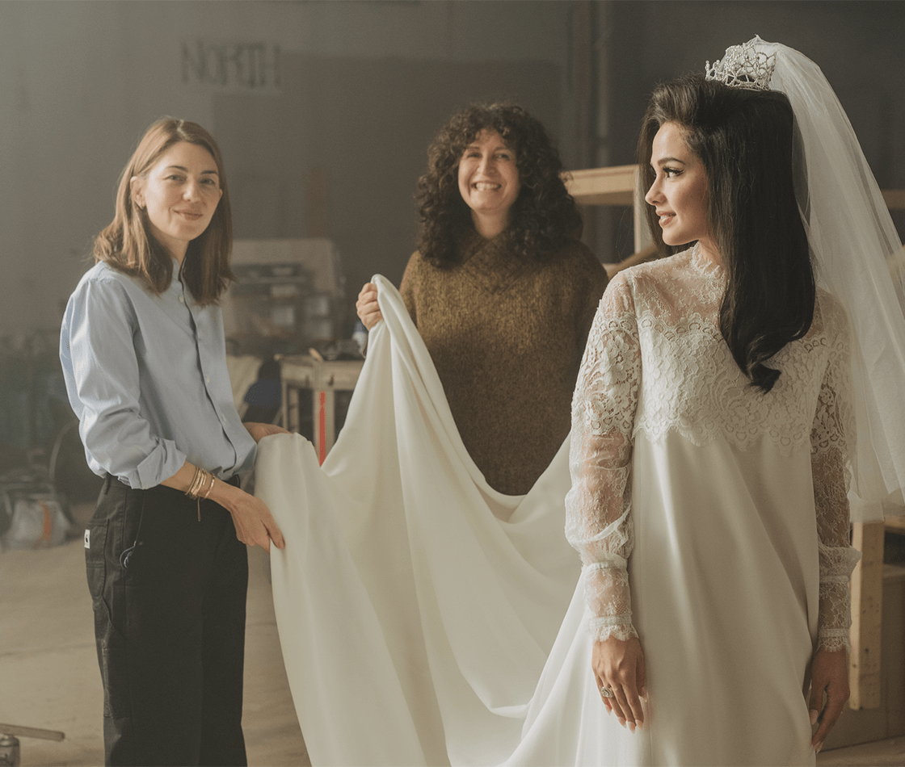

Priscilla
"Priscilla", dirigida por Sofia Coppola, es una adaptación del libro "Elvis and Me" de Priscilla Presley. La película narra la vida de Priscilla Beaulieu, quien, a los 14 años, conoce a Elvis Presley en Alemania, donde él cumple con su servicio militar. A través de la relación con Elvis, la película explora los desafíos y las complejidades de su vida como adolescente inmersa en un mundo de fama, control y deseo de independencia. Con el característico estilo íntimo y visualmente estilizado de Coppola, "Priscilla" ofrece una mirada delicada y melancólica a la historia de una joven que intenta encontrar su identidad bajo la sombra de una de las mayores estrellas del siglo XX.
BEHIND THE SCENES

 


El primer tráiler de "Priscilla" de Sofia Coppola se lanzó el 21 de junio de 2023. Este adelanto presentó una primera mirada al enfoque íntimo y estilizado de Coppola sobre la vida de Priscilla Presley, explorando su relación con Elvis Presley, basado en el libro "Elvis and Me".